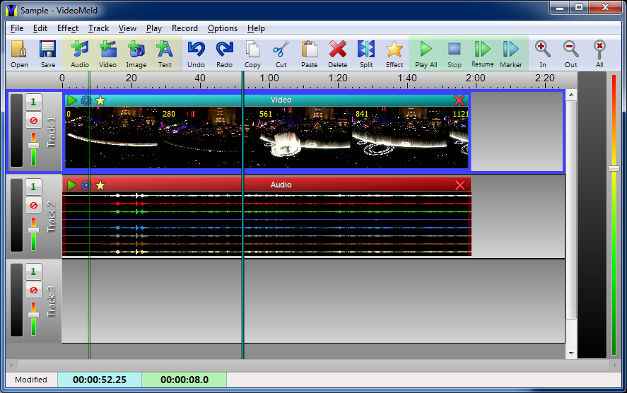

Intially VideoMeld displays a single blank track. The screenshot below shows a project with three tracks, one video section, and one video section.

Main Menu Toolbar Time Line Track Meters Solo Mute Track Volume Video Section Video Frames Audio Section Audio Waveforms Master Meters Master Volume Section Space Playback Marker Edit Marker SelectionThe Time Line shows the time range of the project currently displayed in the window. Clicking the left mouse button on the time line moves the edit marker. If the project is playing, playback jumps to that time.
Track Volume controls the volume for all sections within the track. Both the Master Volume and Track volume apply only to audio sections.
The Mute button disables a track so that it is not played or melded. Use the mute button to temporarily remove a track from playback. The Solo button does the opposite. Only one track is played; no other tracks are played or melded. Use this to play or meld one track when working with many tracks.
The Edit Marker is used for editing commands and for starting playback at a specific time. Click the left mouse button in the time line or right-click the right mouse button on a section and chooose Move Marker Here to move the marker. Also you can drag-and-drop the marker to a new position.
Section Space is the area where sections are placed on a track. The selected track and sections have a blue border. All new sections are added to the selected track and any editing is performed only on selected sections. You can use the left mouse button to select a different track or section.
Use Options | Project Settings to set the video aspect ratio and number of audio channels for the project.
Use Options | Playback Settings if you have more than one audio device. Be sure that the device supports the number of channels selected for the project.
There are several ways to add a file to a track:
The position where files are added in the track depends on the method used. If the mouse is used (right-click or drag-and-drop), then file are added at the mouse's position and other sections are shifted to make room. If one of the Add commands are used, files are added at the edit marker's position if there is enough room. Otherwise they are added at end of the selected track. Other sections are not shifted.
If you are adding a variety of small and large sections, you may need to zoom in or out to get a better view. See View Menu for details.
To select a single section, simply click the left mouse button on
the section. To select a group of sections, do one of the following:
Use Link Sections to link together a group of sections so that when one is selected, all are selected. Use Unlink Sections to disband a group of linked sections so that each section may be selected individually. To remove just one section from a linked group, use the Link icon in the section's title bar.
To move a section, click and hold the left mouse button on a section's title bar then drag-and-drop the section to a new time or to a different track. If more than one section is selected, all selected sections are moved as a single group, preserving the relative spacing between them.
To move a section to an exact time, right click on a section and choose the Move command. Edit | Move does the same thing for the currently selected section. Note that when moving a group of sections, the time is always relative to the left-most section.
The Play Menu contains a number of commands for playing your project. If you need to start playback from a specific time, click the left mouse button on the time (in the time line) and then choose the Play | From Marker command.
Most sections have settings for the title text and colour. Some sections have range and speed settings. Audio sections have channel settings.
There are several ways to view settings:
As mentioned above, sections may be moved to any position or track by dragging-and-dropping with left mouse button. If you are dragging a single section and there is not enough room for the section at the drop position, all of the sections following the drop position will be shifted to the right to make room. If you are dragging a group of sections, you cannot drop them if there is not enough room for all sections to fit without moving other sections.
Before using Edit Menu Commands, make sure the correct section is selected and has a blue border. Some editing commands apply only to a single selected section.
You can copy, trim, and split most sections using the Edit Menu.
To remove part of a section, move the marker to the point where it should be trimmed, then use the appropriate trim command. Or you can simply drag the left or right edge of a section to trim it or change it's display time.
Use copy and paste to duplicate groups of sections or paste them into a different project.
If a section has to be played in several places on several different tracks, you can make copies of the section and drag-and-drop them to a new position or track.
To insert a section in the middle of another section or to move part of a section, move the marker to the dividing point and use Edit | Split.
Effects can be applied to a section using the Effect Menu.
VideoMeld does not modify any of the original files. All editing and effects are performed realtime (on-the-fly) during playback.
Use File | Save to save the project. Note that changing, moving, or deleting any of the files used within the project changes the way the project plays the next time you open it.
Use File | Meld Project To Audio File to combine all audio sections and tracks into a single audio file. The file can then be played by other audio software or burned onto a CD.
Use File | Meld Project To Video File to combine all sections and tracks into a single video file.
If your computer is not fast enough to play all the tracks, use Meld Project To ... to combine several tracks into one. By muting all the tracks you do not want to save, you can combine the remaining tracks into one file. Add the file to the project to to replace the tracks and reduce the processing require during playback.